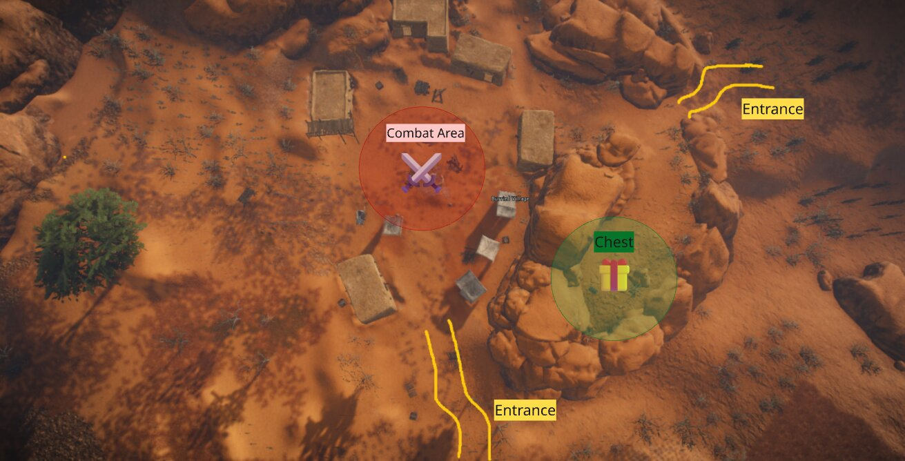
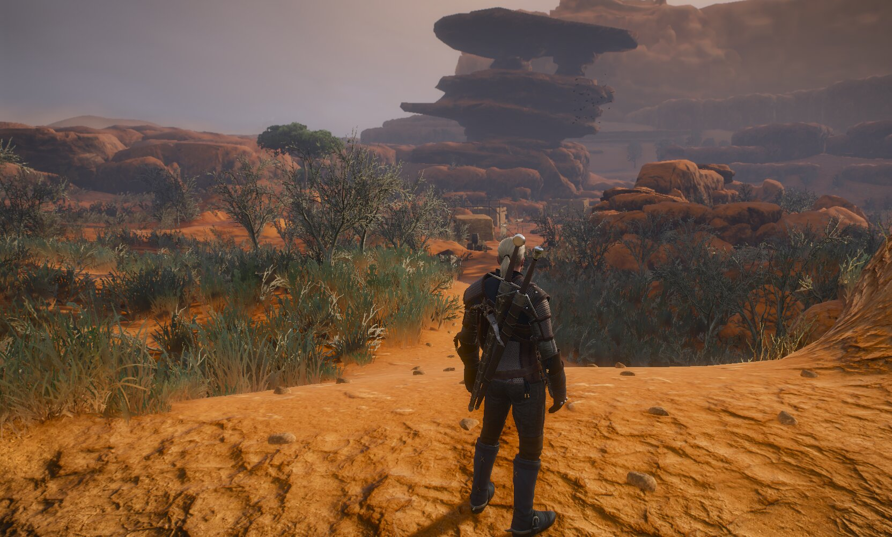
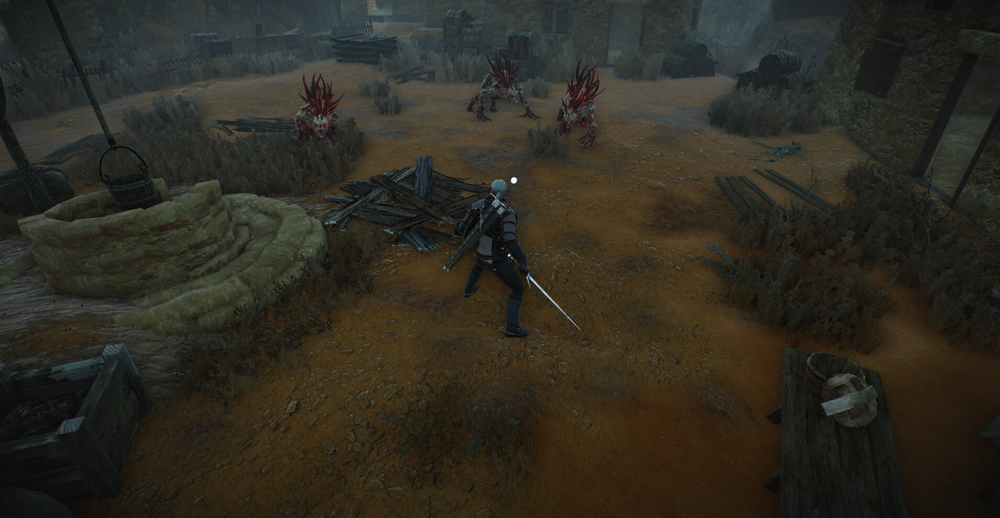
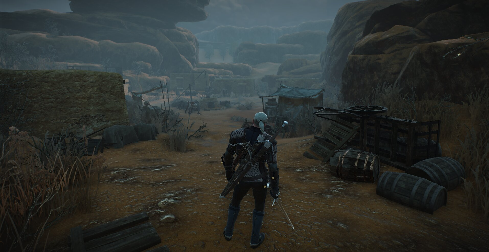

Overview
Revenge of Ofir is a large-scale fan expansion set in the eastern empire of Ofir. The project introduces a new explorable region and expanded systems built using RedKit.
My Role
- Designed and implemented explorable POIs
- Structured player flow in open world spaces
- Ensured environmental storytelling aligned with Witcher lore
- Collaborated with narrative, quest and art teams
Abandoned Village
Designed a monster‑infested village that becomes liberated after combat, restoring civilian activity.

Design Goals
- Create a readable combat arena
- Communicate abandonment through environmental storytelling
- Allow multiple player approaches
- Use landmarks and leading lines for guidance





Before / After
Main Village House Interiors
Designed and detailed 18 interiors in the main village, ensuring historical authenticity and contextual coherence.
- Researched Arabian & Bedouin architecture
- Designed interiors based on resident roles
- Prioritized realism and era‑appropriate details